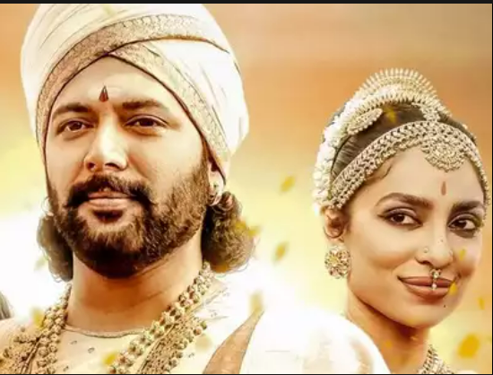

Ponniyin Selvan-1

Ponniyin Selvan-1
The Chola kingdom is under threat from forces both internal and external, and with crown prince Aaditha Karikalan, his younger brother Arunmozhi Varman and the emperor, Sundara Cholar separated by situations, it is up to a messenger to ensure the safety of the kingdom. Can he succeed in his mission, especially with Karikalan's former girlfriend, Nandhini, plotting to bring down the entire Chola empire?

Kalki's Ponniyin Selvan is a sprawling epic that has so far remained elusive to film for many a Tamil filmmaker, and Mani Ratnam finally brings the dream alive with this spectacular adaptation that superbly captures the intrigue, thrills and page-turning quality of the books. In this first of a two-part franchise, the director and his writers — Jeyamohan and Ilango Kumaravel — rise up to the challenge. The manner in which they have condensed the novel is admirable, with the changes — like Kundhavai storming into a secret discussion, the introduction of Ponniyin Selvan's mysterious saviour - adding to the momentum of the narrative. Jeyamohan's dialogues are especially a highlight as he uses language that is both classical and colloquial without making it seem odd. The film does have a shaky start, with the director taking his time to set up the plot. Crown prince Aaditha Karikalan (Vikram) entrusts his friend Vandhiyathevan (Karthi) to deliver a message to his father and emperor Sundara Cholar (Prakash Raj) and sister, princess Kunthavai (Trisha) on the threats that the kingdom is facing. The schemers include Periya Pazhuvettarayar (Sarath Kumar) and Chinna Pazhuvettarayar (Radhakrishnan Parthiban), the empire's finance minister and commander, the numerous kings who have sworn fealty to the emperor, the remaining forces of the vanquished Pandya king and most importantly, Nandhini (Aishwarya Rai Bachchan), Karikalan's former lover and the wife of Periya Pazhuvettarayar, who is determined to bring the entire Chola empire down for reasons of her own.

Shrinking a complex five-volume novel into a two-part movie is mean feat. It takes gumption. A whole lot of it. If any director has that attribute in the requisite measure, it is Mani Ratnam. Ponniyin Selvan - Part 1, a period epic that is vast in scale and varied in visual scope, is proof.
The sprawling, spectacularly mounted film is an ambitious, near-flawless adaptation of a much-loved literary work that demonstrates exactly why it has been a movie project so daunting that the likes of M.G. Ramachandran and Kamalahasan could only make abortive attempts at putting it together.
Needless to say, the tale makes huge technical and artistic demands on Ratnam and his cast and crew. They prove equal to the onerous task of attaining the magnitude, the pacing and the stylistic flourishes that the story demands and available image-making technology allows.
That certainly does not mean that the veteran director surrenders himself lock, stock and barrel to the lure and power of computer-generated imagery. Ratnam is too good a craftsman and storyteller to over-rely on the razzle-dazzle of the kind of unbridled visual effects that have driven recent Indian blockbusters such as Baahubali, RRR and KGF.
It has taken six and a half decades for the story to make it to the big screen. The wait has been worth it. The Tamil-language PS-1 has versions dubbed in Hindi, Telugu, Kannada and Malayalam running in theatres nationwide.
In the 167-minute Ponniyin Selvan - Part 1, some passages seem a tad rushed because the introduction of a panoply of characters and the exposition of historically dense details have to be crunched into a couple of three-hour films.
Editor A. Sreekar Prasad, whose oft-proven skills are tested to the severest, ensures that the story has just enough breathing spaces for it not to keel over into occasional incomprehensibility.
Once the prelude is out of the way and all the major characters have been lined up, PS-1 gets into the swing of things. It presents a phenomenally smooth ride through an exciting series of events - fierce battles, palace intrigue, lost love, vanquished soldiers seeking revenge, brave resistance - that records the high points of Chola history in a manner that is both tangible and texturally immersive.

The most noteworthy aspect of PS-1, besides the consistently impressive performances by a cast led by Vikram and brilliantly propped up by Karthi, Aishwarya Rai Bachchan, Jayam Ravi and Trisha, among others, is the production design by Thotta Tharini and the well-considered choice of locations lensed brilliantly by cinematographer Ravi Varman. The story unfolds in spaces that are eye-popping without being fantastical in the way that settings of historical epics of this nature usually tend to be.
PS-1 invokes the spatial attributes of the tenth century to perfection - be they structures made of stone, interiors of forts and palaces or ships and boats out at sea. But at no point do the images look like they have been crafted on the computer. PS-1 is a marvellously tactile film that stays rooted in a specific period without having to create improbable, cardboard cut-out sets suspended somewhere between a puerile understanding of design and a puerile imagination.
Similarly, the film's dramatis personae - the ailing Emperor Sundar Chola (Prakash Raj) and his three offspring, Crown Prince Aditha Karikalan (Vikram), his younger brother Arulmozhi Varman (Jayam Ravi, who appears late in the film in the guise of the titular character) and sister Kundhavai (Trisha), and their aides and adversaries within and without the kingdom - are never less than human.
They deal with palpable emotions even as they grapple with challenges of grand proportions. The characters, be they Chola royalty or men of common stock, sound believable even when they are in declamatory mode, moving seamlessly from uncommon wisdom to chatty banter.
With the air of outright make-believe masterfully reined in, PS-1 is a historical saga that draws the audience in without resorting to the conjurer's art. Its magic lies purely in its layered cinematic qualities.
Mischief is afoot in the expanding Chola empire with Nandini (Aishwarya Rai Bachchan), wife of the scheming finance minister Periya Pazhuvettaraiyar (R. Sharathkumar), having vowed to destroy the kingdom. She holds a personal grudge against her one-time lover Aditha Karikalan.
The conspiracy, of which the finance minister's brother and the Tanjore Fort's in-charge Chinna Pazhuvettaraiyar (Radhakrishnan Parthiban) and a host of royal chieftains are a part, is aimed at overthrowing Sundar Chola and putting his nephew Madurantaka (Rahman) on the throne.

Sensing the grave danger that lies ahead, Aditha Karikalan sends his best friend and trusted aide Vandhiyathevan (Karthi, who steals almost the entire first half of the film thanks to the character's gift of the gab and amorous antics) with a message for Emperor Sundar Chola. The courageous and cheerful Vandhiyathevan dodges elements in the court of the king as well as of survivors from a defeated Pandiyan army who are out to avenge their slain king Veerapandyan. While power-hungry or jilted-in-love men to a great deal of the talking, PS-1 is true to the source material in that it accords equal significance to the women in the story. Besides the beauteous and strong-willed Nandini, the tough and clear-headed Chola Princess Kundavai plays an important role as the story progresses. Kundavai is not only sent by her father to pacify her elder brother Aditha Karikalan, she also instructs Vandhiyethevan to travel to Sinhala kingdom with a message for her brother Arulmozhi. Two other women in the plot - Vaanathi (Sobhita Dhulipala), who dreams of marrying Arulmozhi, and boatwoman Samuthirakumari (Aishwarya Lekshmi) - do not have as much to do in this part of the magnum opus. More is probably in store for them in the sequel. Action-packed and eventful, the first part of the drama winds up at a point of the story that leaves many questions unresolved and points to what could form the core of Ponniyin Selvan - Part 2, scheduled for release in 2023. The film inevitably packs too much into too little time but it never fails to look and sound - A.R. Rahman's songs and background score constitute the backbone of the sound design - like a meticulously conceived and executed work of cinema. PS-1 is both exhilarating and enriching. Another dose would be just perfect.
 With his magnum opus 'Ponniyin Selvan 1' going on to emerge a huge blockbuster, director Mani Ratnam thanked everybody who worked on the film
With his magnum opus ‘Ponniyin Selvan 1’ going on to emerge a huge blockbuster, ace director Mani Ratnam on Saturday thanked everybody who had worked on the film.
Participating in a thanksgiving meet organised by the film unit, director Mani Ratnam said that he had no other words but to thank the media with folded hands.
Mani Ratnam also thanked producer Subaskaran saying this film wouldn’t have materialised but for Subaskaran who said yes to making the film within two minutes of being told of such an idea
Mani Ratnam also thanked everybody who had worked on the film with him, saying that if it hadn’t been for the support that they had all provided this film wouldn’t have been what it was.
“I am indebted to everybody — every single person including carpenters, make up people, all of them who worked on this film. Sometimes, when I stepped out of the set after shoot, I would get scared to see the number of people working on a scene. So many people were working on each scene, all believing in me,” said Mani Ratnam.
“This was such a big responsibility which I didn’t know how I was going to fulfill. I would put it behind me and get into work mode. I would forget this as soon as I began working. I wish to say a very big thank you to all of them who might be invisible to our eyes but their contribution is big.”
With his magnum opus 'Ponniyin Selvan 1' going on to emerge a huge blockbuster, director Mani Ratnam thanked everybody who worked on the film
With his magnum opus ‘Ponniyin Selvan 1’ going on to emerge a huge blockbuster, ace director Mani Ratnam on Saturday thanked everybody who had worked on the film.
Participating in a thanksgiving meet organised by the film unit, director Mani Ratnam said that he had no other words but to thank the media with folded hands.
Mani Ratnam also thanked producer Subaskaran saying this film wouldn’t have materialised but for Subaskaran who said yes to making the film within two minutes of being told of such an idea
Mani Ratnam also thanked everybody who had worked on the film with him, saying that if it hadn’t been for the support that they had all provided this film wouldn’t have been what it was.
“I am indebted to everybody — every single person including carpenters, make up people, all of them who worked on this film. Sometimes, when I stepped out of the set after shoot, I would get scared to see the number of people working on a scene. So many people were working on each scene, all believing in me,” said Mani Ratnam.
“This was such a big responsibility which I didn’t know how I was going to fulfill. I would put it behind me and get into work mode. I would forget this as soon as I began working. I wish to say a very big thank you to all of them who might be invisible to our eyes but their contribution is big.”
 Vikram as Aditha Karikalan
Vikram as Aditha Karikalan
 Jayam Ravi as Arulmozhivarman
Jayam Ravi as Arulmozhivarman Karthi as Vanthiyathevan
Karthi as Vanthiyathevan
 Aishwarya Lekshmi as Poonguzhali
Aishwarya Lekshmi as Poonguzhali
 Prakash Raj as Sundara Chozhar
Prakash Raj as Sundara Chozhar